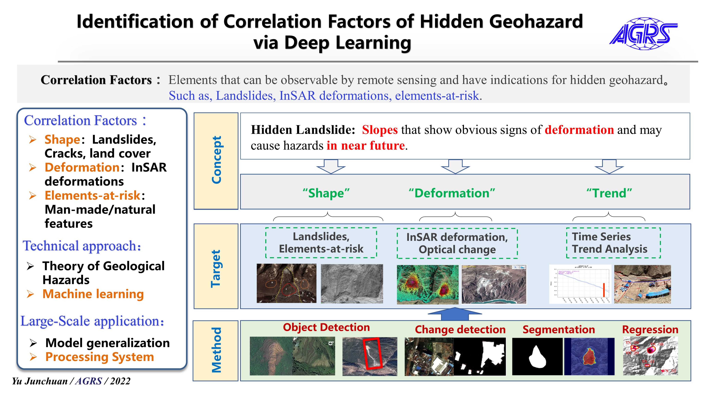
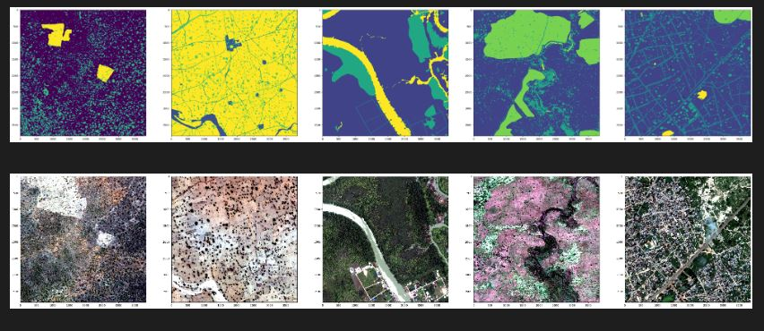

Junchuan Yu
About
Posts
Publications
Talks
Teaching
On this page
Recent posts / Posts recentes
Recent Talks / Palestras recentes
Posts
Junchuan’s blog
Recent posts / Posts recentes
Posts
0 min
AI眼中的诗意——AI绘画
Posts
Deep leanring
Art
Oct 8, 2022
Junchuan Yu
0 min
No matching items
See all/button>
Recent Talks / Palestras recentes
Next activities/Atividades futuras
Talks

Identification of Correlation Factors of Hidden Geohazard via Deep Learning
National Key R&D Program (2022)
Nov 23, 2022
No matching items
See all
Posts
See all posts
Publication
0 min
Welcome To My Blog
news
Nov 11, 2022
Tristan O’Malley
0 min
No matching items
Teaching
0 min

Welcome To My Blog
news
Nov 11, 2022
Tristan O’Malley
0 min
No matching items